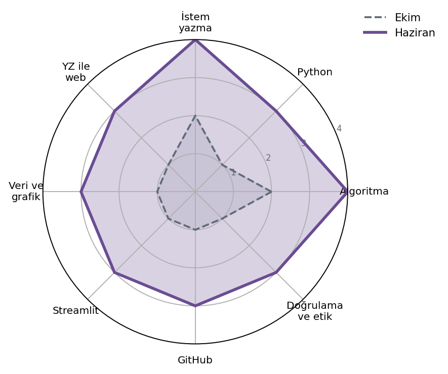
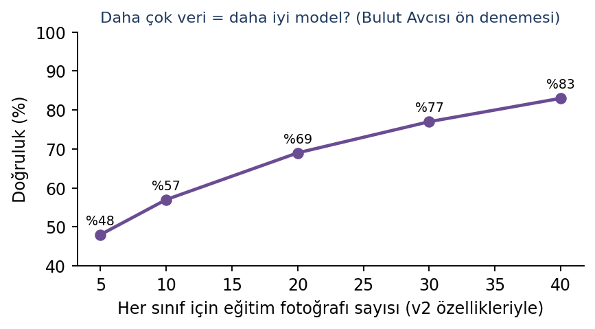
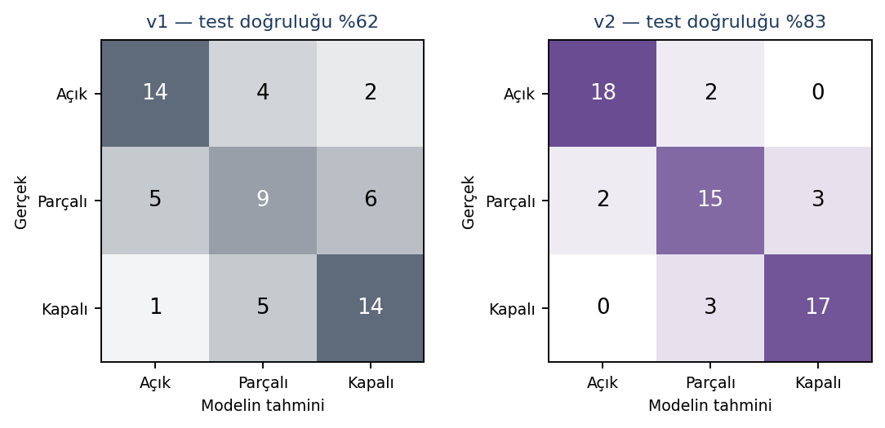
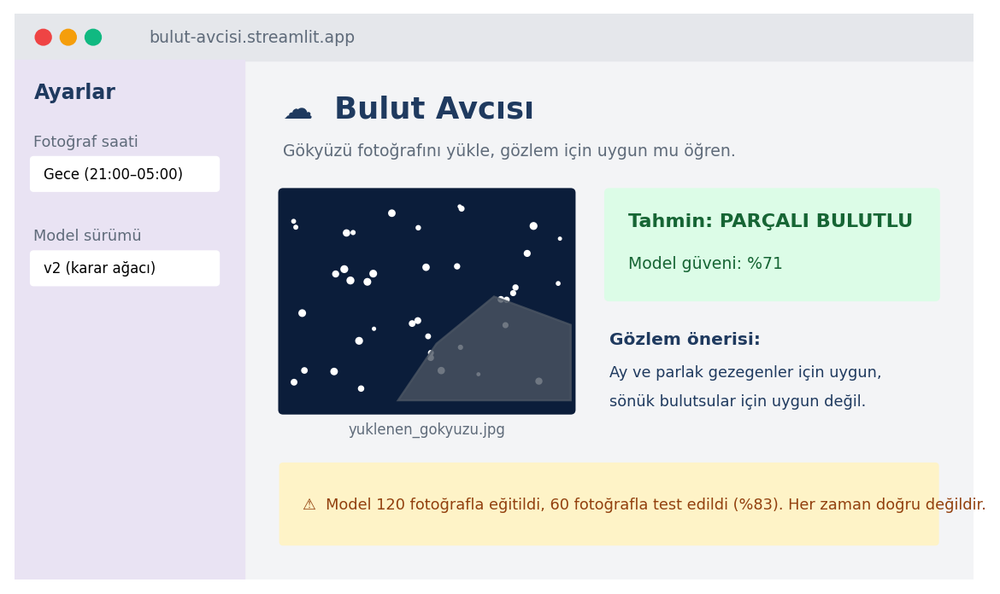
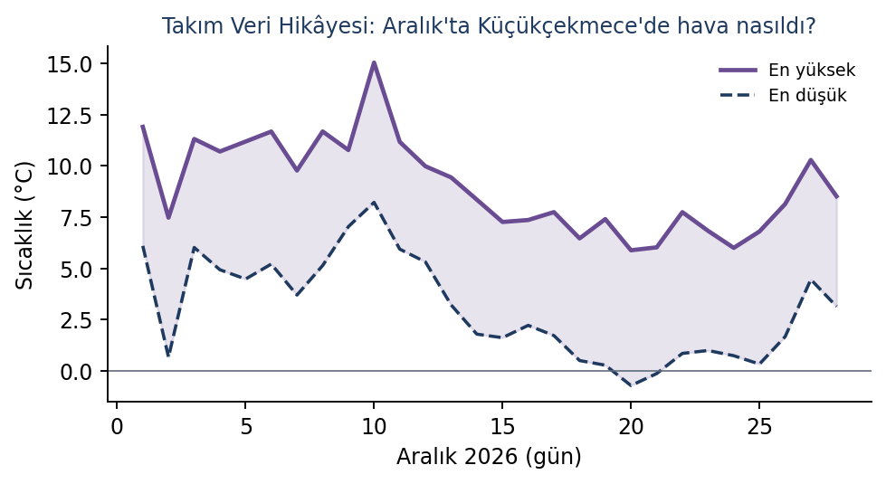

- Ana sayfa
- Örnek portfolyo
- Bölüm 4
Atölye I: Yazılım ve Yapay Zekâ Laboratuvarı
Bulut Avcısı yıldız projesi, altı kanıt kartı ve %95 başarılı görünen modelin hata sayfası.
YZYazılım ve Yapay Zekâ LaboratuvarıKılavuzda 5.1 Yazılım ve Yapay Zekâ Laboratuvarı rehberi
Atölye kapağı
Kılavuzda 4.1 Atölye kapağı
| Atölye kodu | YZ |
| Derslik ve düzen | Bilgisayar-1, Cumartesi, 6’lı blok, 34 hafta |
| Öğretmenim | Yazılım ve Yapay Zekâ Laboratuvarı öğretmeni |
| Portfolyo durakları | 10., 16., 24. ve 32. haftalar (hepsine katıldım) |
Bu atölyeyi neden seçtim?
Yapay zekânın “sihir” olmadığını, birinin ona bir şeyler öğrettiğini duymuştum ama nasıl olduğunu bilmiyordum. Kullanan değil, yapan taraf olmak istedim. Ayrıca bu atölyenin 7. sınıf projeme hazırlık olduğunu biliyordum; projemde gökyüzüyle ilgili bir şey yapmak istiyordum.
Yılın başında bu alanda ne biliyordum?
- Scratch’te döngü, koşul ve değişken kullanabiliyordum. Python’da hiç kod yazmamıştım.
- Yapay zekânın her zaman doğru söylediğini düşünüyordum. Bunun yanlış olduğunu Kanıt 6’da göreceksiniz.
- “Veri” kelimesini duymuştum ama bir modelin veriyle nasıl öğrendiğini bilmiyordum.
Beceri haritası
Kılavuzda 4.2 Beceri haritası
1 = Duydum, 2 = Deniyorum, 3 = Yapabiliyorum, 4 = Öğretebilirim
| Beceri | Ekim | Haziran | Ne değişti? |
|---|---|---|---|
| Problemi adımlara ayırma, algoritma | 2 | 4 | 6. haftadaki akran testinde iki arkadaşıma algoritma kartlarını anlattım. |
| Python temelleri | 1 | 3 | Fonksiyonlu, dosyaya kayıt yapan programları tek başıma yazabiliyorum. |
| Yapay zekâya etkili istem yazma | 2 | 4 | İstemi adım adım iyileştirmeyi öğrendim; istem günlüğümü sınıfa sundum. |
| Yapay zekâ ile web üretme ve düzenleme | 1 | 3 | Portfolyo sitemi yapay zekâ ile başlattım; menüyü, renkleri ve kartları kendim düzenledim. |
| Veri, tablo ve grafik | 1 | 3 | pandas ile tablo okuyup matplotlib ile grafik çizebiliyorum. |
| Streamlit ile uygulama | 1 | 3 | Bulut Avcısı’nın arayüzünü ben yazdım. |
| GitHub temelleri | 1 | 3 | Depo, README ve sürüm kavramlarını biliyorum; yayını öğretmenimiz kurum hesabından yapıyor. |
| Yapay zekâ çıktısını doğrulama ve etik | 1 | 3 | Yapay zekânın yanıldığı durumları yakalıyorum; ekibimle bir model kartı yazdık. |

Yıldız proje: Bulut Avcısı
Kılavuzda 4.3 Yıldız proje
Gökyüzü fotoğrafından gözlem uygunluğunu tahmin eden yapay zekâ uygulaması.
| Takım | Bulut Avcıları: Deniz K., Ege T., Mira S. (3. takım dönemi, 24–34. haftalar) |
| Süre | Mart – Mayıs 2027 (24. hafta model ve model kartı, 30. hafta yayında uygulama) |
| Araçlar | Python, pandas, Pillow, scikit-learn (karar ağacı), Streamlit, GitHub (kurum hesabı), kurumun gökyüzü kamerası görüntüleri |
| Benim rolüm | Veri sorumlusu (fotoğrafların düzeni ve etiket tablosu) ve uygulama arayüzü (Streamlit) |
| Portfolyo kalemleri | P6 takım modeli ve model kartı, P8 yayında takım uygulaması |
1. Problem ve amaç
Bilim ve Keşif atölyesinde iki gece gözlemimiz bulut yüzünden iptal oldu. Hava durumu uygulaması “parçalı bulutlu” diyordu ama bunun gözlem için yeterli olup olmadığını bilmiyorduk. Sorumuz şuydu: Kurumun gökyüzü kamerasının bir fotoğrafına bakarak gökyüzünün açık, parçalı ya da kapalı olduğunu söyleyen bir model yapabilir miyiz?
2. Araştırma
Hava durumu sitelerinin bulut oranını uydu görüntülerinden hesapladığını öğrendik. Sonra “YZ şart mı?” testini yaptık: Sadece “fotoğraf ne kadar karanlık?” diye bakan basit bir kural yeterli olur muydu? Denedik. Gece fotoğraflarının hepsi karanlık olduğu için kural fotoğrafların yalnızca %40’ını doğru bildi. Demek ki öğrenen bir modele ihtiyacımız vardı.
3. Fikir ve tasarım
| Fikir | Artısı | Eksisi | Karar |
|---|---|---|---|
| A. Teachable Machine | Çok hızlı | Modelin neden karar verdiğini göremiyoruz | |
| B. Her fotoğraftan 4 sayı çıkar ve karar ağacı kur | Kararın nedenini görebiliyoruz; 18. haftada öğrendik | Daha çok kod | Seçildi |
| C. Hazır uydu verisi | Kolay veri | Bizim gökyüzümüzü değil, bölgeyi gösteriyor |
Her fotoğraftan çıkardığımız 4 sayı: ortalama parlaklık, mavi renk oranı, parlaklık farkı (kontrast) ve parlak nokta sayısı, yani görünen yıldızlar.
4. Yapım
- Kurumun gökyüzü kamerasından 187 fotoğraf seçtik. Üçümüz her fotoğrafı ayrı ayrı etiketledik; 3 kişiden en az 2’sinin aynı dediği etiket geçerli oldu. Anlaşamadığımız 7 fotoğrafı veri setinden çıkardık: 180 fotoğraf kaldı, her sınıfta 60.
- Fotoğrafların 120’si eğitim, 60’ı test için ayrıldı (her sınıftan 20 test fotoğrafı).
- Ege özellik çıkaran kodu, ben etiket tablosunu ve uygulama arayüzünü, Mira test ve model kartını hazırladı.

5. Test
İlk modelimiz (v1) test fotoğraflarının %62‘sini doğru bildi. Karışıklık matrisinde en çok “parçalı” sınıfının karıştığını gördük. v1’den önce %95 çıkan bir “sahte başarı” daha vardı; onu hata sayfasında anlattım.
6. İyileştirme: önce ve sonra
v1’in neden yanıldığını inceledik: Eğitim fotoğraflarının çoğu gündüz çekilmişti, gece fotoğrafları azdı. v2’de üç şey değiştirdik:
- Her sınıfta gündüz ve gece fotoğraflarını eşitledik.
- “Parlak nokta sayısı” özelliğini ekledik.
- Ege’nin önerisiyle karar ağacının derinliğini 3 ile sınırladık; ağaç çok derin olunca eğitim fotoğraflarını ezberliyordu.

7. Sonuç
v2 test fotoğraflarının %83‘ünü doğru bildi. Uygulamayı Streamlit ile yaptık; kodu kurumun GitHub deposunda, uygulama ise öğretmenimizin kurum hesabıyla yayında. Bir daha yapsaydık hem daha fazla fotoğraf toplar hem de bulutun Ay’ın önünde olup olmadığını ayrıca sorardık.

Ekipteki rolüm ve görev tablosu
| Görev | Deniz K. | Ege T. | Mira S. |
|---|---|---|---|
| Fotoğraf seçimi ve klasör düzeni | ● | ||
| Etiketleme (3 kişi ayrı ayrı) | ● | ● | ● |
| Etiket tablosu (CSV) ve anlaşmazlık listesi | ● | ||
| Özellik çıkarma kodu (ozellikler.py) | ● | ||
| Model eğitimi ve derinlik denemeleri | ● | ○ | |
| Test ve karışıklık matrisi | ○ | ● | |
| Streamlit arayüzü (uygulama.py) | ● | ||
| Model kartı ve README | ○ | ● | |
| Sunum (24. ve 30. haftalar) | ● | ● | ● |
● sorumlu, ○ yardım etti. Kime nasıl yardım ettim: Mira’ya model kartındaki “veri” bölümünü yazarken etiket tablosundaki sayıları çıkardım.
Kodu açıklıyorum: uygulama.py
import streamlit as st
from PIL import Image
import joblib
from ozellikler import ozellik_cikar
st.title("☁ Bulut Avcısı")
model = joblib.load("model_v2.pkl")
dosya = st.file_uploader("Gökyüzü fotoğrafı yükle", type=["jpg", "png"])
if dosya is not None:
resim = Image.open(dosya)
st.image(resim, width=300)
ozellik = ozellik_cikar(resim)
tahmin = model.predict([ozellik])[0]
guven = max(model.predict_proba([ozellik])[0])
st.success(f"Tahmin: {tahmin} (güven: %{guven*100:.0f})")
if tahmin == "Açık":
st.write("Sönük gök cisimleri için harika bir gece!")
elif tahmin == "Parçalı":
st.write("Ay ve parlak gezegenler için uygun.")
else:
st.write("Bu gece gözlem yerine Stellarium'u deneyin.")
st.warning("Bu model her zaman doğru değildir. Son karar gözlemcinindir.")
| Satır | Ne yapıyor? (kendi açıklamam) |
|---|---|
| 1–4 | Gerekli kütüphaneleri çağırıyorum. ozellik_cikar, Ege’nin yazdığı ve fotoğraftan 4 sayı çıkaran fonksiyon. |
| 6–7 | Sayfa başlığını yazıyorum ve daha önce eğitip kaydettiğimiz v2 modelini dosyadan yüklüyorum. Model her açılışta yeniden eğitilmiyor. |
| 8–9 | Kullanıcıya dosya yükleme kutusu gösteriyorum. Dosya yüklenmediyse alttaki kodlar çalışmıyor. |
| 10–12 | Fotoğrafı açıp ekranda gösteriyorum, sonra modelin anlayacağı 4 sayıya çeviriyorum. |
| 13–14 | Modelin tahminini ve bu tahmine ne kadar emin olduğunu (olasılık) alıyorum. |
| 15 | Sonucu yeşil kutuda yüzde olarak yazdırıyorum. |
| 16–21 | Tahmine göre gözlem önerisi veriyorum. Bu cümleleri Bilim ve Keşif öğretmenimize danışarak yazdım. |
| 22 | Uyarı her zaman görünüyor; çünkü modelimiz %17 oranında yanılıyor. |
Model kartı
| Başlık | Bulut Avcısı v2 |
|---|---|
| Ne yapar? | Gökyüzü fotoğrafını açık, parçalı ya da kapalı olarak sınıflandırır. |
| Veri | 180 fotoğraf (her sınıfta 60; yarısı gündüz, yarısı gece), 120 eğitim, 60 test. Kaynak: kurumun gökyüzü kamerası. |
| Başarı | Test doğruluğu %83 |
| Nerede yanılır? | Dolunay gecelerinde gökyüzü çok aydınlık olduğu için “parçalı” diyebiliyor. İnce sisi tanıyamıyor. |
| Kim kullanmamalı? | Uçuş veya güvenlik kararı verecek kişiler. Bu model sadece gözlem planlamak içindir. |
| Etik ve gizlilik | Fotoğraflarda insan yok, sadece gökyüzü var. Kamera görüntüleri kurumun izniyle kullanıldı. |
Süreç seçkisi
Kılavuzda 4.4 Süreç seçkisi
Yıl boyunca topladığım kanıtlardan farklı aylara ait altısını seçtim. Kanıt 4 ve Kanıt 6, atölyenin zorunlu kanıtlarıdır.
Önyargı deneyi (P2)

- Tarih ve hafta
- 17 Ekim 2026, 3. hafta
- Bu ne?
- Teachable Machine ile “kedi mi, değil mi?” modeli eğittik. İlk modele sadece beyaz kedi fotoğrafı verdik; model siyah kedileri tanıyamadı. İkinci modelde her renkten eşit fotoğraf kullandık.
- Bireysel ya da grup, rolüm
- İkili çalışma (Mira S. ile). Ben fotoğrafları seçtim, Mira sonuçları tabloya yazdı.
- Ne öğrendim?
- Model sadece gördüğünü bilir. Veri tek tip olursa model de önyargılı olur. Bu fikir, Bulut Avcısı’nda gece fotoğraflarını eşitlememizi sağladı.
- Yapay zekâ
- Teachable Machine (model eğitme aracı). Üretken yapay zekâ kullanmadım.
- Dosya adı
2026-10-17_YZ_onyargi-deneyi.png
Akıllı asistan ve ilk GitHub depom (P3, portfolyo durağı 1)
- Tarih ve hafta
- 28 Kasım 2026, 10. hafta
- Bu ne?
- Menü, not tutma (dosyaya kayıt) ve hesap makinesi özellikleri olan bir Python asistanı yazdık. Kurum GitHub hesabındaki depomuza README ile yükledik ve 2 dakikalık demo yaptık.
- Bireysel ya da grup, rolüm
- İkili (Ege T. ile). Not tutma bölümünü ve README'yi ben yazdım.
- Ne öğrendim?
- Dosyaya Türkçe yazarken
encoding=utf-8yazmazsam harflerin bozulduğunu gördüm. README yazmak, kodumu başkasının gözüyle okumamı sağladı. - Yapay zekâ
- Hayır
- Dosya adı
2026-11-28_YZ_akilli-asistan-demo.mp4
Takım veri hikâyesi panosu (P5, portfolyo durağı 2)

- Tarih ve hafta
- 23 Ocak 2027, 16. hafta
- Bu ne?
- Açık veri kaynağından (Open-Meteo) Küçükçekmece’nin Aralık sıcaklıklarını çektik, pandas ile temizledik ve Streamlit panosunda yayınladık. Sorumuz: “Aralık’ta don oldu mu?”
- Bireysel ya da grup, rolüm
- Takım 1, Veri Dedektifleri (Selin B., Kaan M.). Ben grafiği çizdim ve 3 dakikalık sunumun bulgular kısmını anlattım.
- Ne öğrendim?
- Grafikte sıfır çizgisini göstermezsek don günlerinin fark edilmediğini gördük. Aynı veri, farklı grafikle farklı hikâye anlatabiliyor.
- Yapay zekâ
- Hayır
- Dosya adı
2027-01-23_YZ_veri-panosu.png
İstem günlüğüm
Zorunlu kanıt| # | İstemim | Çıktı | Ne fark ettim? |
|---|---|---|---|
| 1 | “Bana portfolyo sitesi yap.” | İngilizce başlıklı, genel bir site | Çok belirsizdim; yapay zekâ beni tanımıyor. |
| 2 | “6. sınıf öğrencisiyim; Yazılım-YZ ve Astronomi atölyelerindeyim. Türkçe, tek sayfalık bir portfolyo sitesi yap.” | Türkçe ama 10 bölüm, çok uzun | Kaç bölüm istediğimi söylemedim. |
| 3 | “4 bölüm olsun: Ben Kimim, YZ Projelerim, Gözlemlerim, Köprü Fikrim. İletişim bölümü olmasın. Mor ve yeşil renkleri kullan.” | İyi, ama yine de iletişim formu ekledi | “Olmasın” dediğimi atladı; formu kendim sildim. |
| 4 | “Her proje için kart olsun: başlık, görsel, 2 cümle açıklama, bağlantı. Kod basit olsun, her bölümün başına açıklama satırı koy.” | Anlaşılır, açıklamalı kod | Açıklama satırları sayesinde kodu kendim değiştirebildim. |
| 5 | “Bu sitede kişisel bilgi güvenliği açısından sorun var mı?” | Tam adımı ve fotoğrafımı kaldırmamı önerdi | Yapay zekâyı kontrol aracı olarak da kullanabilirim. |
- Tarih ve hafta
- 15 Mayıs 2027, 32. hafta
- Bu ne?
- Portfolyo sitemi yapay zekâyla başlatırken yazdığım istemlerin ve çıktıların kaydı. Sonra siteyi elle düzenledim: menü, renk kodları, kart sırası ve alt bilgi.
- Bireysel ya da grup, rolüm
- Bireysel
- Ne öğrendim?
- İyi bir istem kim olduğumu, ne istediğimi, ne istemediğimi ve biçimi söyler. Yapay zekânın her söylediğimi uygulamadığını da kontrol etmem gerekiyor.
- Yapay zekâ
- Evet. Laboratuvarın yerel yapay zekâ asistanı site kodunun ilk taslağını üretti; düzenlemeler bana ait.
- Dosya adı
2027-05-15_YZ_istem-gunlugu.pdf
Oltalama mesajı dedektörü (P7)
- Tarih ve hafta
- 17 Nisan 2027, 28. hafta
- Bu ne?
- Türkçe duygu analizini öğrendikten sonra, sahte “ödül kazandınız” mesajlarını yakalayan kelime tabanlı bir dedektör yazdım. 30 örnek mesajın 26’sını doğru ayırdı.
- Bireysel ya da grup, rolüm
- Bireysel
- Ne öğrendim?
- “Hemen”, “son şans”, “şifrenizi girin” gibi kelimeler çok güçlü ipuçları. Ama dedektör, “hiç fena değil” gibi olumsuz kelimeli olumlu cümleleri yanlış anlıyordu: Kelime saymak anlam anlamak değil.
- Yapay zekâ
- Hayır
- Dosya adı
2027-04-17_YZ_oltalama-dedektoru.py
“YZ yanıldı” kaydı
Zorunlu kanıt- Tarih ve hafta
- 8 Mayıs 2027, 31. hafta
- Bu ne?
- Laboratuvarın yapay zekâ asistanına “Satürn’ün kaç uydusu var?” diye sordum, “82” dedi. Bilim ve Keşif öğretmenimiz sayının daha yüksek olduğunu söyledi. NASA’nın sitesine baktık: 2025’te açıklanan yeni uydularla birlikte sayı 274’e çıkmış.
- Bireysel ya da grup, rolüm
- Bireysel
- Ne öğrendim?
- Yapay zekânın bilgisinin bir tarihi var; güncel bilgiyi resmî kaynaktan doğrulamalıyım. Artık yapay zekâdan aldığım her sayıyı bir kaynakla kontrol ediyorum.
- Yapay zekâ
- Evet. Soruyu yerel yapay zekâ asistanına sordum; doğrulamayı kendim yaptım.
- Dosya adı
2027-05-08_YZ_yz-yanildi-saturn.png
Hata sayfası: %95 başarılı modelimiz aslında ezberciydi
Kılavuzda 4.5 Hata sayfası
Ne oldu?
Bulut Avcısı’nın ilk denemesi %95 doğruluk verdi. Çok sevindik ve hemen sınıfa söyledik. Sonra Mira kendi balkonundan çektiği 10 yeni gökyüzü fotoğrafını denedi: Model 10 fotoğrafın 5’ini yanlış bildi.
Neden oldu?
Dosyaları kopyalarken test için ayırdığımız fotoğrafları yanlışlıkla eğitim klasörüne de koymuştuk. Model, sınavın sorularını önceden görmüş bir öğrenci gibiydi: Öğrenmemiş, ezberlemişti. Öğretmenimiz bunun adının veri sızıntısı olduğunu söyledi.
Önce: hatalı klasör düzeni
fotograflar/
├── egitim/ (187 fotoğraf)
└── test/ (60 fotoğraf)
bu 60 fotoğraf eğitimde de var!Sonra: düzeltilmiş
fotograflar/
├── egitim/ (120 fotoğraf)
└── test_DOKUNMA/ (60 fotoğraf)
en başta ayrıldı, kilitlendiNasıl çözdüm?
Etiket tablomdan her fotoğrafın hangi klasörde olduğunu tek tek kontrol ettim ve 60 tekrar eden fotoğrafı buldum. Fotoğrafları en baştan iki klasöre ayırdık, test klasörünün adını test_DOKUNMA yaptık. Gerçek doğruluk %62 çıktı. Moralimiz bozuldu ama asıl çalışma o zaman başladı ve v2’de %83’e ulaştık.
Bir daha olsa ne yapardım?
Önce test verisini ayırıp kilitler, sonra işe başlardım. Ve bir sonuç “çok iyi” çıktığında sevinmeden önce şüphelenirdim. Bu hata bana yılın en önemli dersini verdi: Kendi sonucunu sınamak da bilimin parçası.
Atölye yansıması
Kılavuzda 4.6 Atölye yansıması
Bu atölyede öğrendiğim en önemli şey neydi?
Yapay zekânın bir sihir değil, veriden öğrenen bir sistem olduğunu ve ancak verisi kadar iyi olduğunu öğrendim. Önyargı deneyi ile Bulut Avcısı aslında aynı dersi verdi: Modele ne gösterirsen onu öğrenir.
Bu atölye bana kendim hakkında ne öğretti?
Kod yazmayı çok sevdiğimi ama ekipte klavyeyi bırakmakta zorlandığımı fark ettim. Navigatör olduğum haftalarda yön göstermenin de kod yazmak kadar önemli olduğunu öğrendim.
Bu alanda bir sonraki adımım ne olurdu?
Fotoğraftan sayı çıkarmak yerine doğrudan fotoğrafı okuyan bir görüntü modelini (25. haftada tanıştığımız sinir ağları gibi) denemek ve modeli Bilim ve Keşif’teki gözlem notlarıyla birleştirmek istiyorum. Bu fikrimi köprü sayfasında anlattım.